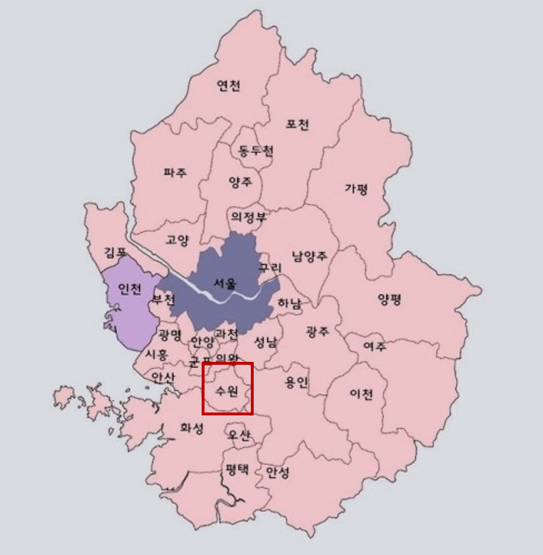

수원시(水原市)는 대한민국 경기도 중남부에 있는 특례시이자 경기도청 소재지이다. 동쪽으로는 용인시, 서쪽으로는 안산시, 남쪽으로는 화성시, 북쪽으로 의왕시와 접한다. 시청 소재지는 팔달구 인계동이며, 장안구, 권선구, 팔달구, 영통구의 4개 일반구가 설치되어 있다. 2022년 1월 13일 창원시, 용인시, 고양시와 함께 특례시가 되었다. 대한민국의 기초지방자치단체 중 인구가 가장 많다.
수원시는 경기도 중남부에 위치하고 있으며, 동쪽은 용인시 기흥구 및 수지구에, 서쪽은 안산시 상록구와 화성시 봉담읍 및 매송면에, 남쪽은 화성시 병점 및 동탄에, 북쪽은 의왕시에 접하고 있다.
경부고속도로, 영동고속도로, 용인서울고속도로가 분기하고 있으며, 경기도 남부의 교통중심지로, 인천과 여주로 통하는 육로의 기점이 된다.
수원시의 면적은 121.04 km2의 주형 분지로 되어 있다.
시가지 중앙에는 해발 143m의 팔달산이 있어 공원을 이루며, 유네스코 세계문화유산 수원화성 성곽이 둘러져 있으며 동북공심돈, 사대문, 봉수대, 방화수류정 등 문화재가 곳곳에 있다.
시 외곽 북쪽으로는 백운산과 광교산이 위치해 있어 높은 구릉지역을 형성하며, 서쪽 외곽에는 칠보산 위치해 있어 낮은 구릉지를 이룬다.
수원 중심부와 동남 지역으로 평야를 형성되어서, 도시의 시가지 형성 및 수도권 근교의 농산, 원예 등에 도움이 되고 있다.